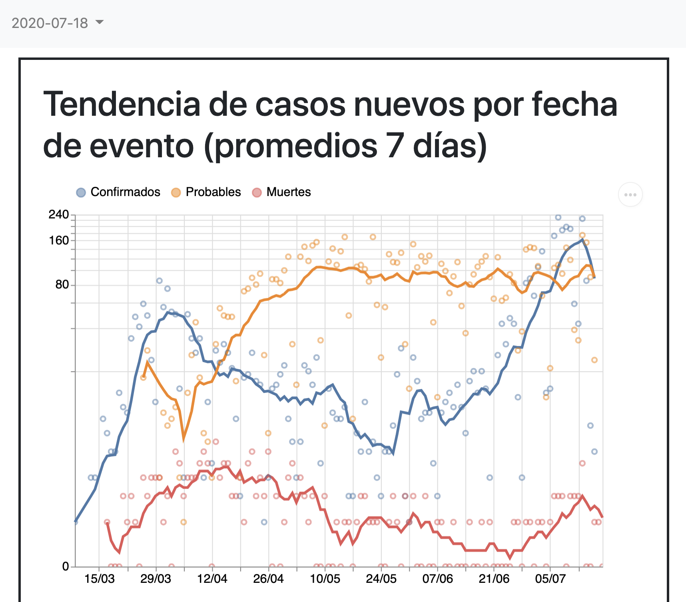
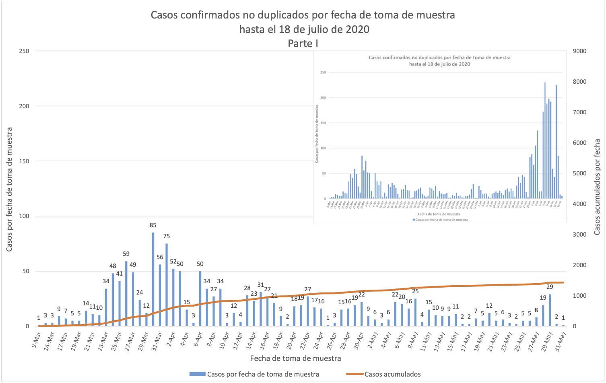
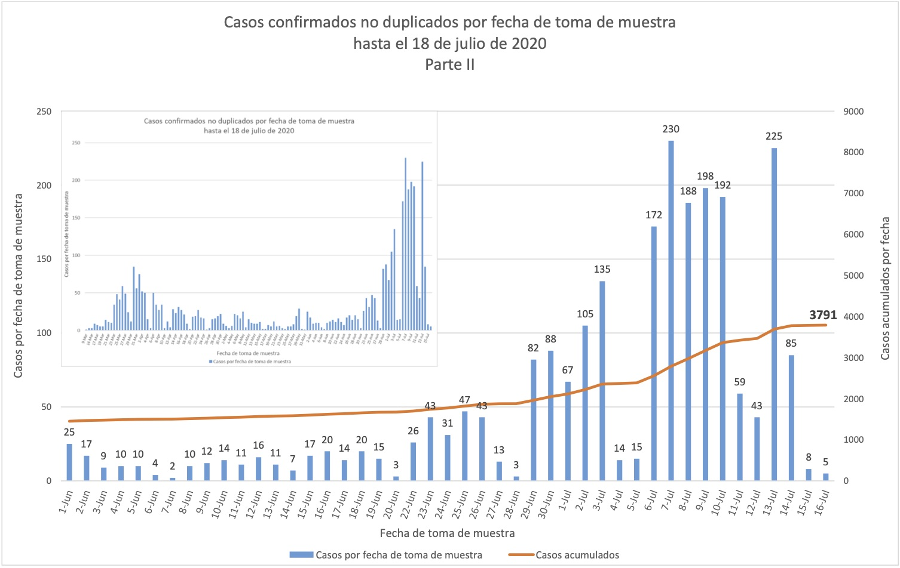
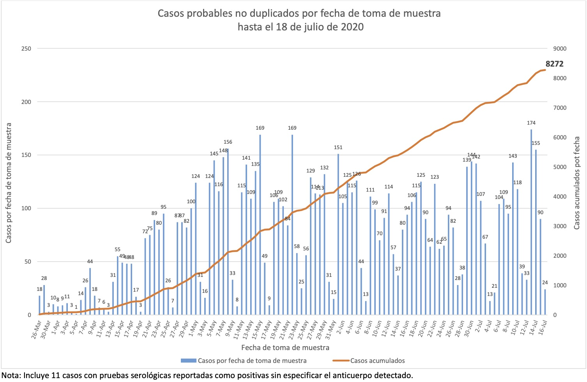

[PR] Confirmed + probable cases is a bad metric for Puerto Rico
State or US: Puerto Rico
I figure this isn’t an easy issue to tackle, but I’m growing more and more concerned that the Project’s choice to foreground the confirmed + probable cases figures for Puerto Rico, it’s not giving the best quality of information available. Perhaps this can be summed up with this chart that I make with my Puerto Rico COVID-19 data collection and visualization project:
This shows, by date sample taken (which I’m aware is different from reported date as the Project uses):
- Blue: New confirmed cases
- Orange: New probable cases
Lines are 7-day averages, dots are the raw values straight from charts in Puerto Rico’s Department of Health’s official daily PDF reports, samples of which I attach at the bottom of this issue.
The very striking pattern I wish to highlight in my chart is the following:
- New probable cases (orange line) have been found at a more or less flat rate (70-100) since early May.
- New confirmed cases, on the other hand, fell from 51.4/day on April 1st to 4.9/day on May 27, and have been on an exponential rise since then (162.1/day on July 13).
And the key observation I’d like to make is that if one tracks of Puerto Rico’s epidemic by the sum of confirmed and probable cases, one doesn’t spot the exponential climb until very recently, because the probable cases figures—which have in many ways behaved as background noise—mask it out.
Some additional facts that are worth remarking:
- Puerto Rico’s Department of Health, in its daily case count bulletins (here’s the most recent), defines a “confirmed case” as one that has a positive RT-PCR test (footnote 1) and a “probable case” as one that has a positive serological test (footnote 3).
- There were numerous news reports during May from officials in Puerto Rico that large volumes of persons being indiscriminately given serological tests was producing a large number of “false positives” that were later testing negative on PCR. (I put “false positives” in scare quotes because the people making the complaints didn’t seem to clearly distinguish between people with antibodies who no longer had the virus and false positive proper.) See for example this May 24 news story: “52 school cafeteria employees who were positive to COVID-19 in serological tests give negative to molecular tests”, and note that these 52 were all of the positive cases—not a single one from this incident tested positive on molecular!
Data sources
- Puerto Rico Department of Health daily COVID-19 reports, which have daily charts of COVID-19 cases by test sample date, with separate charts for probable and for confirmed cases.
- My Puerto Rico COVID-19 tracking project, which has data files where I’ve transcribed all of the PRDoH cases charts I’ve seen since April 22nd



Ah, @muamichali,
Didn’t see that, good to hear.
@sacundim Would you mind sending me your email to michal.mart@covidtracking.com or post it here? I would like to have another way to communicate outside github as well. Thanks again for everything you do to help us!
This issue has been automatically marked as stale because it has not had recent activity. It will be closed if no further activity occurs. Thank you for your contributions!
This issue has been closed because it was stale for 15 days, and there was no further activity on it for 10 days. You can feel free to re-open it if the issue is important, and label it as “not stale.”
Hi @sacundim
I haven’t looked at your post in detail yet, but this is something we are working towards, not just with PR but in general. https://github.com/COVID19Tracking/issues/issues/578